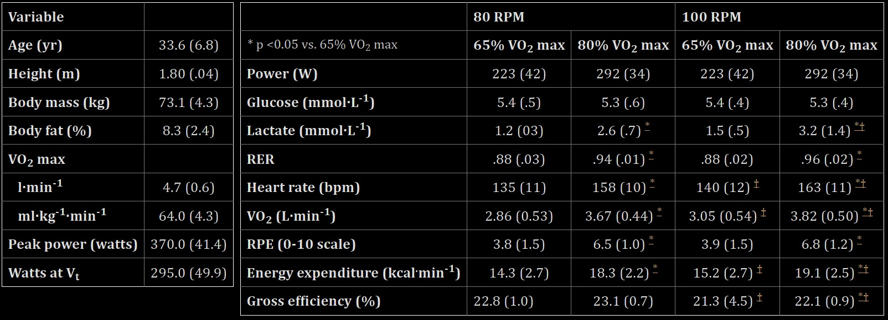
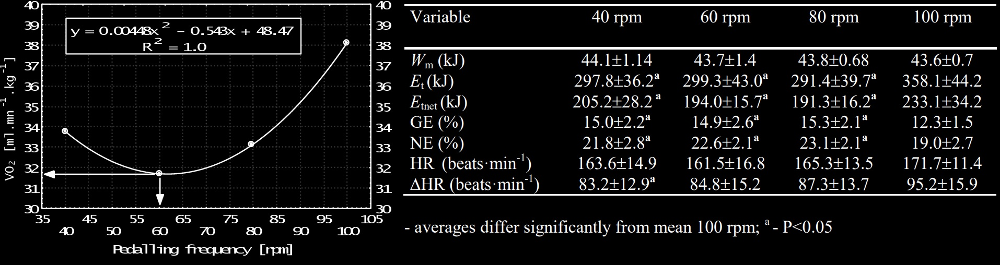
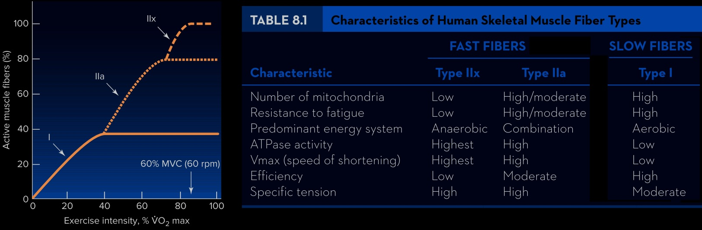
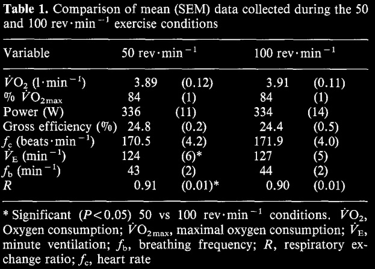

為什麼踏頻要盡量維持 90 rpm
一、踩踏的力學分析
踩踏的功率跟所施的力和踏頻有關，如果輸出的功率跟曲柄長度都固定，那麼踏頻越高所需要的力就越小，而加重齒比會讓轉速變慢，維持高踏頻。當加重齒比後，會讓力的變化沒那麼大。
當我們在踩踏時 I, II 象限是主要施力，III, IV象限就是把腳帶回 I, II 象限而已，假設右腳往下 在這邊稱往下的腳為前腳，那左腳就是往上，在這邊稱為後腳，當前腳往下踩時同時也是把後腳往上推，所以有部分的功率是將後腳上推，所以在 III, IV 象限通常是負功，當作拉提後可以降低負功的值。
所以就發力的觀點來看，其實是後腳分擔前腳的部份的力，而向下踩時通常是用股四頭肌，拉提時通常是用到大腿後側與小腿肌肉，若後腳有主動往上，那就可以分攤前腳的力，但是拉提不太好施力，建議可以輕輕抬起就好。
 |
|---|
| 圖一：踩踏力圖[1][2] |
二、踩踏的生理反應
除了拉提外，踏頻也是大家在爭論的部分，目前主流的說法是踏頻大約是 85~95 之間，那麼來看一下運動科學對於踏頻的研究，這篇論文招募了一群受試者，基本資料如右表，內容是三小時左右的變瓦踩踏，接近比賽的情況，同一組人先以踏頻 100 做一次，然後再用踏頻 80 重複相同的內容，並記錄下兩次的一些生理反應，兩次測驗間隔 48 小時當作有完全恢復，從結果來看，在相同強度下踏頻 80 的，乳酸、心率、攝氧量及能量消耗都比較低，而在相同的做功下攝氧量較低代表效率較高，所以踏頻 80 的能量轉換效率比踏頻 100 還高。
|  |
|---|
| 圖二：踏頻 100 與踏頻 80 的生理反應[3] |
有另外一篇論文再去做更低踏頻的實驗，實驗結果表示並非踏頻越低效率越高，而是在某一個值有最低的心率與能量消耗，就這篇論文的結果來看 瓦數是 250 W 時，最低心率是出現在踏頻 60 左右，而能量消耗則是在踏頻 80 左右最低，與我們常聽到踏頻盡量保持在 90 有段差距，這個問題也困擾了運動科學界一段時間，而隨著更深入的研究發現，跟不同種類的肌肉參與程度還有效率有關。
|  |
|---|
| 圖三：不同踏頻的心率與攝氧量[4] |
三、人體的肌纖維
人體的肌肉主要分成心肌、平滑肌跟骨骼肌，心肌和平滑肌就是心臟和其他內臟的肌肉，一般運動所會用到的肌肉為骨骼肌，而骨骼肌又可以分成快縮肌與慢縮肌，低強度運動時多數是慢縮肌參與，當強度一直提升，會先由快縮肌中的 IIa 先參與，在更高的強度後 IIx 才會參與，網路上寫 IIa 跟 IIb 是比較舊的資料，而這三種肌肉經由訓練後可互相轉換，另外對於這三種肌肉的，無氧醣解能力、收縮速度、抗疲勞能力，能力高低就如這張表所示，從研究結果來看，全身的能量消耗最少時，大概是在踏頻 60 ~ 80 之間，這樣就可以跟之前的結果對起來，而下肢快肌與慢肌的效率最高分別是在，踏頻為 84 和 72 的時候，這跟我們常聽到踏頻要維持在90很接近了。
|  |
|---|
| 圖四：肌纖維的分類與其特色[5] |
而快縮肌疲勞耐受度沒有慢縮肌高，所以如果能維持在快縮肌效率最高的踏頻下，可以推測相同瓦數的輸出就不會這麼容易疲勞，而在另一篇論文則是提到，在85% VO2max強度的下踩半小時，且幾乎將攝氧量、心跳等結果控制成一樣，發現踏頻 50 比踏頻 100 消耗更多醣源，所以由前面的結果可知 同瓦數下，踏頻 50 所需要的力比踏頻 100 還要大，這時快縮肌的參與比例比較高，高踏頻因為節奏比較快所以也是快縮肌較高，而前一頁說快縮肌的效率大概是在踏頻84最高，推測也許是因為踏頻100效率較高，所以可以推測推薦踏頻90的原因，是因為快縮肌的效率在這時非常高，且相對於其他踏頻能夠保留更多的醣源，來應付比賽中其他高強度的攻擊，當然這也僅僅是推測其中原因而已，也可以在留言區分享你的看法，
 |
|---|
| 圖五：肌纖維的分類與其特色[6] |
所以從力學分析可以知道，同瓦數下低踏頻所需的力比較大，而將後腳輕輕抬起可以分攤前腳的出力，也就是分攤股四頭肌的出力，而雖然踏頻60左右的心率跟耗能最低，但是因為快縮肌介入較多且效率較低，且快縮肌的效率在踏頻84時最高，所以維持踏頻90左右能保留更多醣源，可以來應付比賽中高強度的攻擊，當然一般未經過訓練的人會習慣在低踏頻，本能地踩踏在最低耗能的踏頻 大概是 70 左右，所以需要經過訓練才能維持 90 的踏頻。
|  |
|---|
| 圖六：踏頻 100 與踏頻 50 的肝醣消耗[7] |
參考資料：
[1]. Ferrer-Roca, V., Rivero-Palomo, V., Ogueta-Alday, A., Rodríguez-Marroyo, J. A., & García-López, J. (2017). Acute effects of small changes in crank length on gross efficiency and pedalling technique during submaximal cycling. Journal of sports sciences, 35(14), 1328–1335. https://doi.org/10.1080/02640414.2016.1215490
[2]. Bini, R. R., Hume, P. A., Croft, J., & Kilding, A. E. (2013). Pedal force effectiveness in Cycling: a review of constraints and training effects. Journal of Science and Cycling, 2(1), 11-24.
[3]. Stebbins CL, Moore JL, Casazza GA. Effects of cadence on aerobic capacity following a prolonged, varied intensity cycling trial. J Sports Sci Med. 2014 Jan 20;13(1):114-9. PMID: 24570614; PMCID: PMC3918546.
[4]. K.Buśko. The influence of pedalling frequency on mechanical efficiency in exercises with the same intensity. January 2004 Biology of Sport 21(1):51-56
[5]. Exercise physiology : theory and application to fitness and performance 10ed. Authors: Scott K. Powers (Author), Edward T. Howley (Author).
[6]. Umberger BR, Gerritsen KG, Martin PE. Muscle fiber type effects on energetically optimal cadences in cycling. J Biomech. 2006;39(8):1472-9. doi: 10.1016/j.jbiomech.2005.03.025. Epub 2005 May 31. PMID: 15923008.
[7]. Ahlquist LE, Bassett DR Jr, Sufit R, Nagle FJ, Thomas DP. The effect of pedaling frequency on glycogen depletion rates in type I and type II quadriceps muscle fibers during submaximal cycling exercise. Eur J Appl Physiol Occup Physiol. 1992;65(4):360-4. doi: 10.1007/BF00868141. PMID: 1385118.